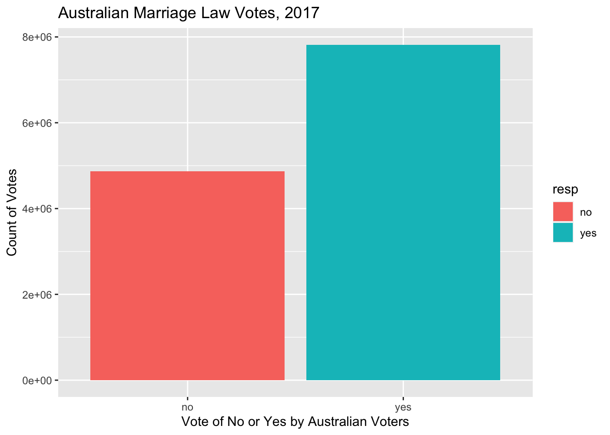
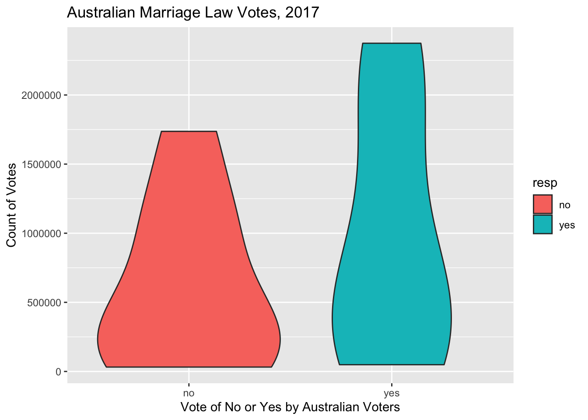
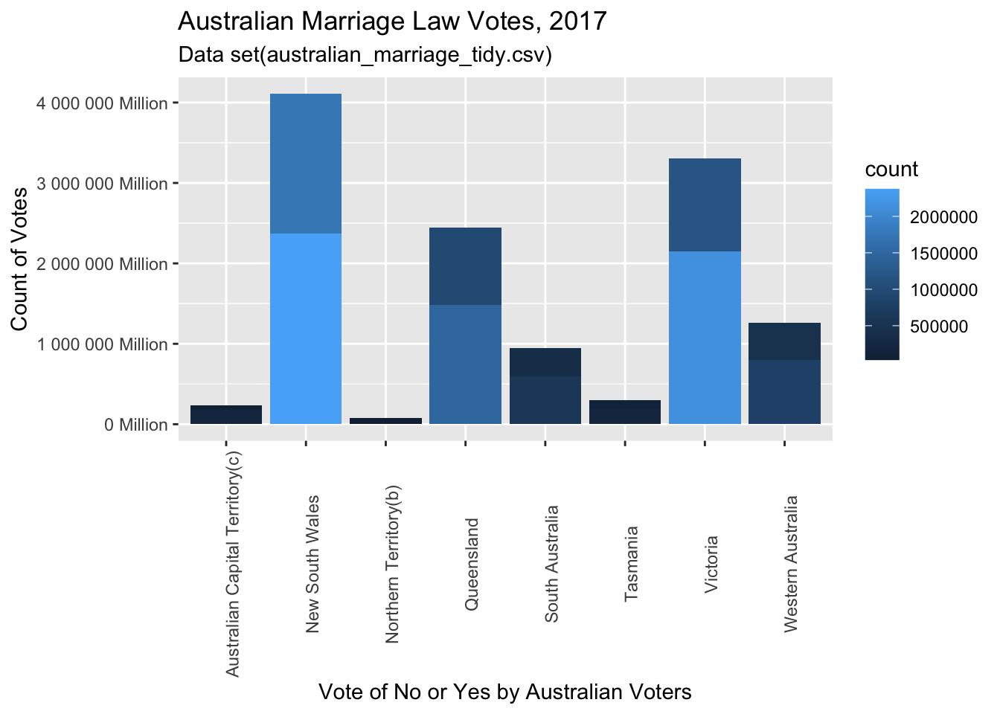

library(tidyverse)
library(ggplot2)
library(dplyr)
library(hrbrthemes)
knitr::opts_chunk$set(echo = TRUE, warning=FALSE, message=FALSE)Challenge 7
challenge_7
australian_marriage
Visualizing Multiple Dimensions Using the Australian Marriage Dataset
Initial View of Data
Let’s look at the dataframe of the Australian Marriage Law Vote again to refresh our memories:
am<-read.csv("_data/australian_marriage_tidy.csv")
am territory resp count percent
1 New South Wales yes 2374362 57.8
2 New South Wales no 1736838 42.2
3 Victoria yes 2145629 64.9
4 Victoria no 1161098 35.1
5 Queensland yes 1487060 60.7
6 Queensland no 961015 39.3
7 South Australia yes 592528 62.5
8 South Australia no 356247 37.5
9 Western Australia yes 801575 63.7
10 Western Australia no 455924 36.3
11 Tasmania yes 191948 63.6
12 Tasmania no 109655 36.4
13 Northern Territory(b) yes 48686 60.6
14 Northern Territory(b) no 31690 39.4
15 Australian Capital Territory(c) yes 175459 74.0
16 Australian Capital Territory(c) no 61520 26.0dim(am)[1] 16 4summary(am) territory resp count percent
Length:16 Length:16 Min. : 31690 Min. :26.00
Class :character Class :character 1st Qu.: 159008 1st Qu.:37.23
Mode :character Mode :character Median : 524226 Median :50.00
Mean : 793202 Mean :50.00
3rd Qu.:1242588 3rd Qu.:62.77
Max. :2374362 Max. :74.00 sum(am$count,na.rm=TRUE)[1] 12691234In addition to viewing the data frame itself, we find the some basic statistics for the data set, including the 1st and 3rd quartile of the count and the percent, respectively, the mean and median of the count and percent, respectively, and the count of all (yes/no) votes of all territories totals 12,691,234 votes.
And, we see the most basic info tells us the dimensions of the dataframe: 16 rows and 4 columns.
Briefly describe the data
Australian Marriage data set includes responses from eligible Australians on a law to allow same-sex couples to marry, across the named territories of the country. Responses from survey participants are in binary form of yes/no, and for each response type,a percentage of the yes/no responses of each territory is also included in the data frame.
We’ll look at a very simple bar chart to quickly visualize the outcome of the vote. We’ve updated this bar graph from Challenge 5 to include colors, x-axis and y-axis labeling features, and a Title for the graph, left out in the first presentation of this bar graph in Challenge 5.
am<-read.csv("_data/australian_marriage_tidy.csv")
ggplot(am, aes(x=resp, y=`count`, fill=resp)) +
geom_bar(stat = "identity")+
labs(title = "Australian Marriage Law Votes, 2017", y = "Count of Votes", x = "Vote of No or Yes by Australian Voters")
Each bar in the graph is a representation of the percent of that particular vote. The bar for Yes votes is taller than the bar for No votes, representing a greater count of yes votes than no votes. We can see the majority of Australians voted to allow same-sex coupled to marry, demonstrated in the taller bar for yes votes, again, indicating more yes votes than no votes.
Basic Violin Plot of Australian Marriage Law Vote
am<-read.csv("_data/australian_marriage_tidy.csv")
ggplot(am, aes(x=resp, y=count, fill=resp)) +
geom_violin()+
labs(title = "Australian Marriage Law Votes, 2017", y = "Count of Votes", x = "Vote of No or Yes by Australian Voters")
am territory resp count percent
1 New South Wales yes 2374362 57.8
2 New South Wales no 1736838 42.2
3 Victoria yes 2145629 64.9
4 Victoria no 1161098 35.1
5 Queensland yes 1487060 60.7
6 Queensland no 961015 39.3
7 South Australia yes 592528 62.5
8 South Australia no 356247 37.5
9 Western Australia yes 801575 63.7
10 Western Australia no 455924 36.3
11 Tasmania yes 191948 63.6
12 Tasmania no 109655 36.4
13 Northern Territory(b) yes 48686 60.6
14 Northern Territory(b) no 31690 39.4
15 Australian Capital Territory(c) yes 175459 74.0
16 Australian Capital Territory(c) no 61520 26.0We can see the basic violin plot doesn’t give us much more value than the bar plot done above. This is what Tufte might call unneeded chart ink, although if the basic violin plot was presented without the bar plot, it would suffice to provide a visualization, although no more valuable than the bar plot.
Bar Plot - Publication Ready…almost…
Let’s try another attempt the bar plot to find more meaning to the visualization of the data frame.
ggplot(am, aes(x=territory,y=`count`, fill=`count`)) +
geom_bar(stat = "identity")+
scale_y_continuous(labels = scales::label_number(suffix = " Million"))+
labs(title = "Australian Marriage Law Votes, 2017", y = "Count of Votes", x = "Vote of No or Yes by Australian Voters",subtitle = "Data set(australian_marriage_tidy.csv)")+
theme(axis.text.x=element_text(angle=90))
Alright! This is giving some visual meaning to the data!
Now we can see some perspective to the vote counts by territory. We see the variation of voter populations among the territories: Australian Capital Territory has total votes of less than a half of a million votes, while New South Wales Territory has total votes of just over 4 million votes. We can see the relative impact of each territory’s votes on the overall Australian vote by looking at each territory’s total votes count. We can also see, signified by the different shades within each territory’s bar, the proportion of yes and no votes of each territory.
The yes and no votes of each territory would be a more meaningful visual with one color for yes, and another color for no. Increasing the size of the Y axis, but still using the vote counts would also provide better opportunity to see the yes and not votes of the smaller territories. In the current plot, the smaller territories seem to have one color in the bar, which is due to the scale of the Y axis, because each territory does, indeed, have both yes and not votes, as we have seen previously in the last challenge 5 plot. The key to the graph can also be improved through the addition of two colors in the bars. This opportunity to increase the Y axis scale and use two colors for the different type of vote will be utilized in future plots of similar data.